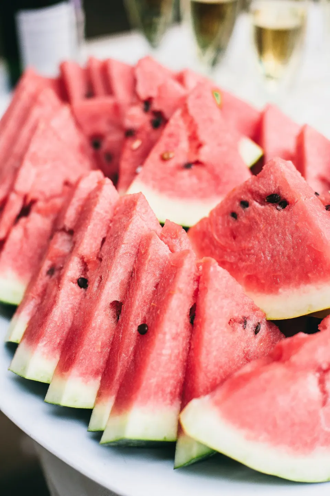
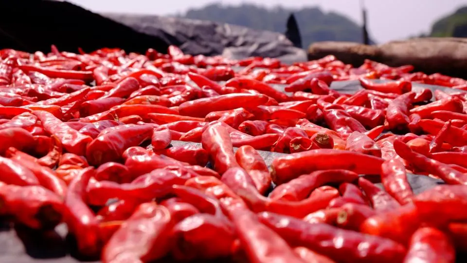

01
Raspados and drinks
Raspados, fruit waters, cold-pressed juice and smoothies. Ask the shop what is on the menu today.
- Raspados
- Fruit waters
- Cold-pressed juice
- Smoothies
Raspados and smoothies · Sahuarita, Arizona
In the mood for a raspado, a smoothie, a fruit water, something spicy?
Jungle Fruit Raspados is a smoothie shop in Sahuarita, Arizona, with raspados, fruit snacks and smoothies for takeout or dine-in. You will find it at 15920 S Rancho Sahuarita Blvd Ste 150. Call or send a message on Facebook with any questions.

Illustrative photos
Jungle Fruit Raspados is a smoothie shop on S Rancho Sahuarita Blvd in Sahuarita, with raspados, obispos, fruit waters, cold-pressed juice and smoothies, plus fruit and spicy snacks.
What we do
Raspados, fruit waters, cold-pressed juice and smoothies. Ask the shop what is on the menu today.

02Fruit snacks, spicy snacks and obispos, for takeout or dine-in.
Full list
Menu categories as listed on the Jungle Fruit Raspados Facebook page and the menu page of junglefruitsahuarita.com. No individual menu items or prices are shown. Photos are illustrative stock images.
Raspados. Smoothies. Sahuarita.
Raspados, smoothies and fruit snacks at Jungle Fruit Raspados on S Rancho Sahuarita Blvd in Sahuarita, Arizona.
Illustrative photo
How to start
A raspado, a smoothie, a fruit water, a snack or something else. Pick it in the message helper below.
Call Jungle Fruit Raspados, or copy the text from the helper and send it on Facebook.
The shop is at 15920 S Rancho Sahuarita Blvd Ste 150 in Sahuarita. Check the details with the business before you go.
Contact
You can reach Jungle Fruit Raspados by phone or through their Facebook page. Use the helper to write your message, then paste it there.
15920 S Rancho Sahuarita Blvd Ste 150, Sahuarita, AZ 85629
Pick what you need. Nothing is sent from this page: you copy the text and paste it on Facebook.